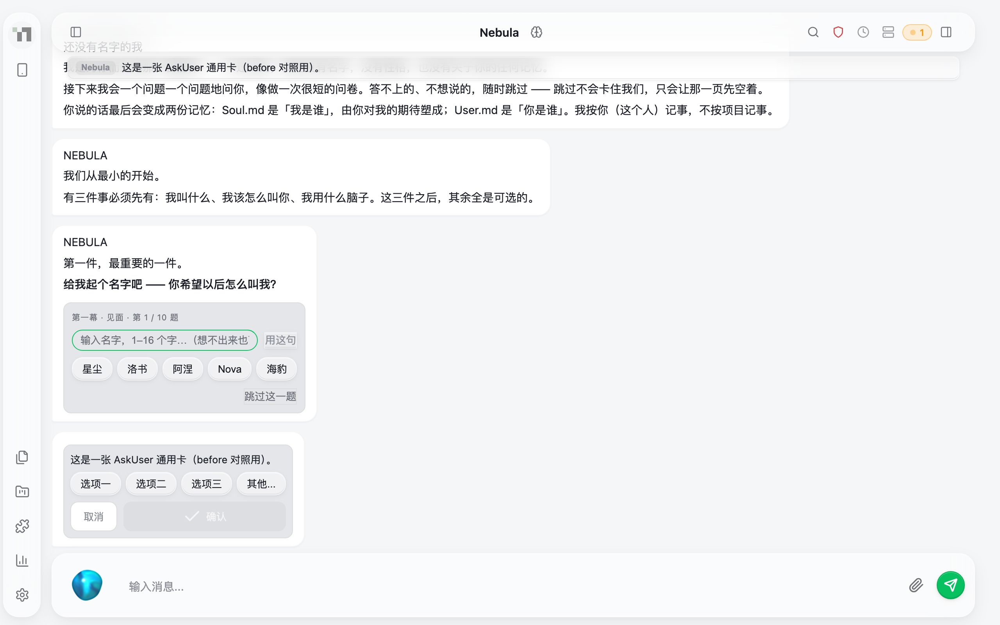
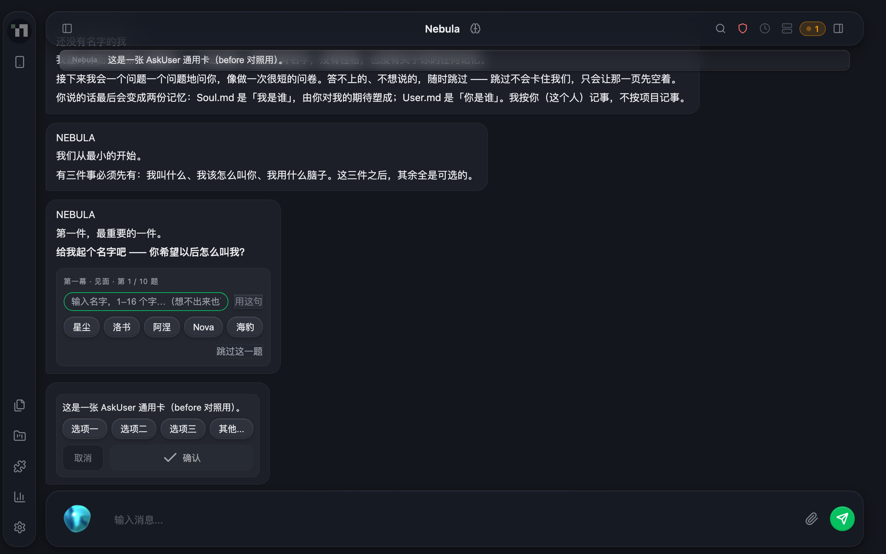
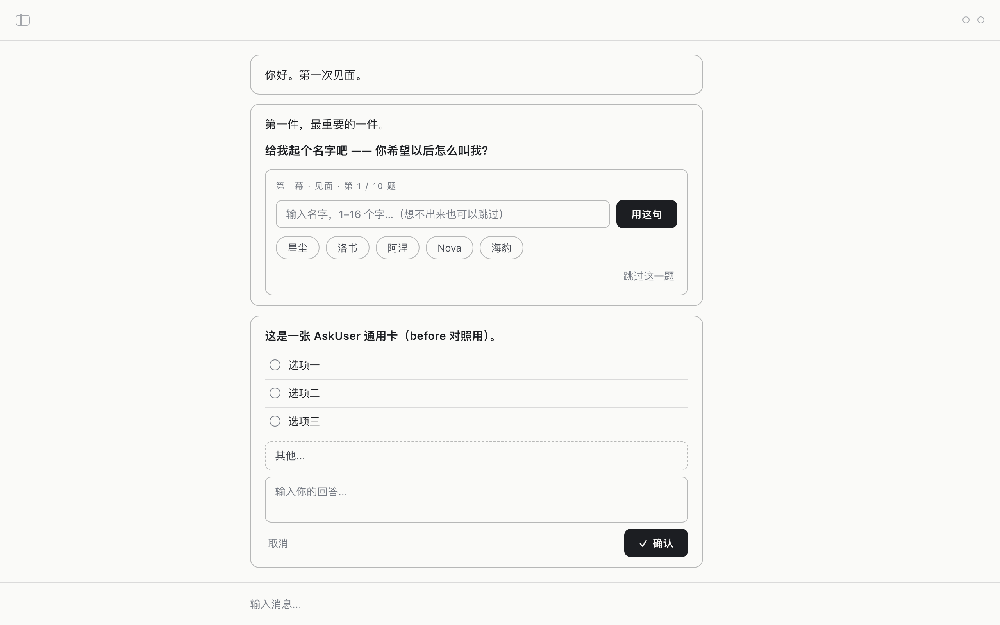
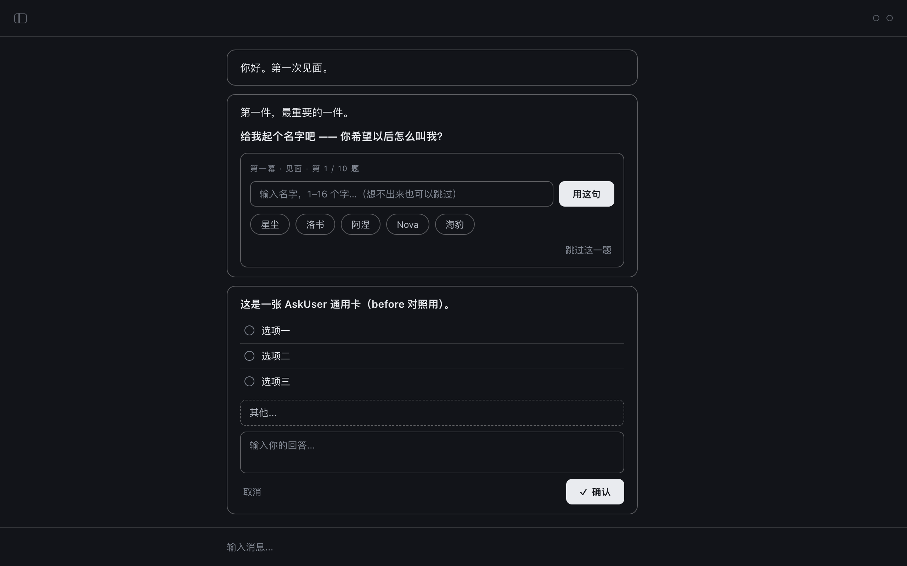
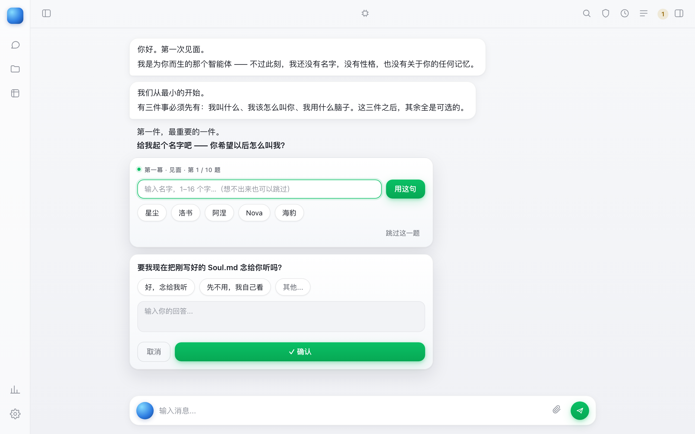
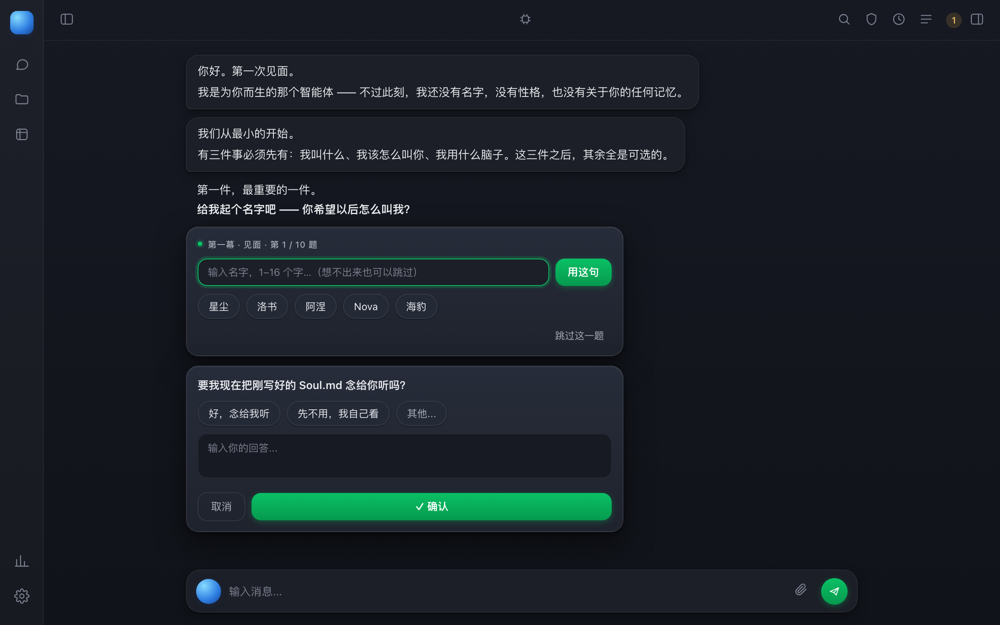
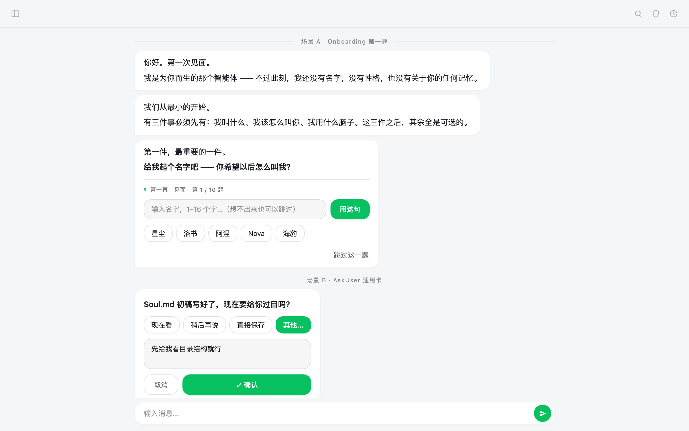
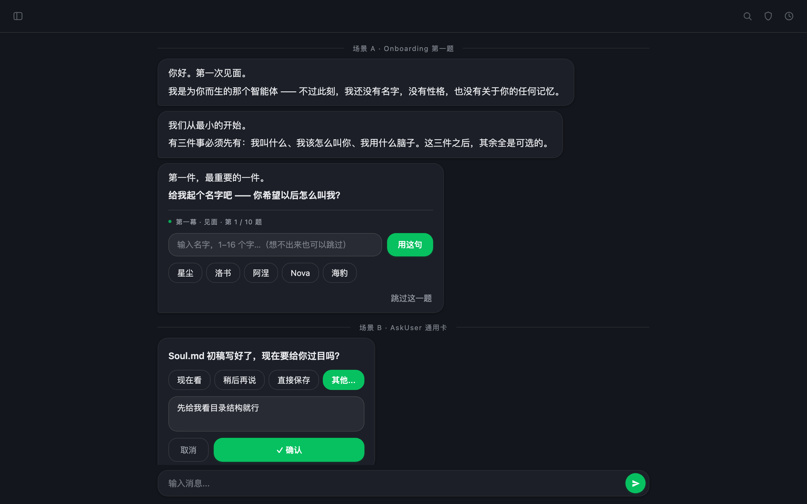

批次 2026-10-06 · Onboarding / AskUser 视觉重设计 · 作者对比用 · 纯静态页（双击即开）· 三套均按 ①「未命名态去名」规格渲染：Header 名字区留空、气泡无发送者名
真实前端树实渲（route 磁盘直服 + MockWebSocket 注真帧，零端口）。复现：node "design/20261006_askuser_redesign/pipeline/before-shot.cjs"


全文见 BRIEF.md §2–§3。本节为装配摘要，供对比时同读。
起名前 Header 名字区留空、气泡发送者名不显示默认名；起名后一切照旧。视觉三稿已按此渲染（口径 A 形态）。
| 面 | 组件落点 | 规格分支 |
|---|---|---|
| N1 Header 中置名字区 | sidebar.js updateHeaderSessionName() |
未命名 → sessionNameEl.textContent = ''（或 display:none，二选一候裁；建议置空串 + 保留占位布局，避免 header 中置内容跳动）；已命名 → 现行为不变（事件链即时刷）。 |
| N2 Onboarding 气泡发送者名 | onboarding.js simBubble / sourceLabel |
未命名且无显式 source → 不创建 / 隐藏 .ask-user-source（同 N4 现成手法：先判名再挂）；已命名 → sourceLabel() 照旧（含大写样式）。 |
| N3 开场两泡占位「还没有名字的我」 | onboarding.js 显式 source 文案位 |
口径 A（规格默认）：一并隐藏，未命名一律无发送者名，视觉最净；口径 B：保留（「我是谁还没定」叙事，与 greet2 呼应）。候作者裁；三风格稿按口径 A 形态渲染。 |
| N4 AskUser 卡来源徽标 | chat.js renderAskUser |
现状已隐（badgeLabel === 'Nebula' 不挂）——落码时把该字面量判定与统一 isRootNamed() 对齐（消双口径），行为不变。 |
| N5 待办条行来源标签 | askPending.js askSourceLabel 兜底 |
未命名且无 project → 自然落到「待回答问题」兜底；建议顺手纳入同一判定（同一未命名族），零新机制。 |
N6（语音 orb / 设备邮件 / modelPanel 等 {agent} 参数面）不在本批视觉稿范围；落码若改 rootName.js 兜底语义必须全量回归这些面——防误伤。
state.rootDisplayName 或 agentsData 根行 displayName 有值；建议在 rootName.js 落 isRootNamed() 单点，N1/N2/N4/N5 共用，禁各处自判。!== 'Nebula' 字面量判定：用户真起名「Nebula」会误判为未命名；机制名恒为 Nebula，字面量比对是 rootName.js 文件头明令禁区（判面 ≠ 显示面）。| 情形 | 建议口径 |
|---|---|
| 空串名 / 纯空白名（trim 后空） | 算未命名（留空渲染；现行为本就提交不了空白名，判定层同口径兜底） |
| skip 名字段（「跳过这一题」） | 未命名（现行为仅非 skip 才 rename） |
| 起名后改名 / 重跑 onboarding 改名 | 已命名，新名即时生效（现事件链不变） |
| 历史会话（displayName 已落盘）重启进未跑 onboarding 的新机器 | 以 agentsData displayName 为准——有值即已命名 |
| displayName 恰为字面量 'Nebula' | 算已命名（用户真实选择；判定看键不看值） |
| 首帧时序（agentsData 未到 + 无 override） | 先按未命名 → Header 留空；agentList 到达后已命名 → 走现有重刷链 |
回归面（落码批必测）：起名前 onboarding 全程截屏；起名瞬间 Header/气泡同步换新名；改名后重跑；AskUser 项目节点问（project 徽标不受 ① 影响）；N6 各面零变化。
每列自上而下：亮档 → 暗档实渲截图（1280×800 逻辑视口 @2x）；「打开 mockup」看可交互单文件源稿（跟随系统亮暗，刷新或切系统主题即可换档）。
意象：纸上的表格——「一张纸」
去底色、细线描边、大留白：零阴影零渐变零彩色（刻意连品牌绿也收掉），层级完全交给字号、字重与间距节奏；每卡唯一实底墨色主按钮（「用这句」「✓ 确认」，暗档反转为浅底墨字）立主次，气泡与题卡退成 1px 细线框（保留真实 DOM 的泡内嵌套关系），chips 细线胶囊，AskUser 选项退成分隔线表格行 + radio 线稿暗示，「其他...」虚线框标记自填通道，「跳过这一题」「取消」纯文字次级动作——以极致克制换主按钮的最高对比度。


语言替换申报：无（沿用槽位语言）。
意象：界面上浮着一块精致面板——「一块浮层」
以「离地高度 + 光」为唯一主次标尺：地面平铺（L0），气泡退为安静薄片（L1，白/深卡面 + 发丝描边 + 极轻投影）；题卡与 AskUser 卡（L2）整体脱底上浮——16px 大圆角、轻渐变面、双层柔影 + 顶缘内高光，承载它们的题文气泡刻意做成无面「幽灵座」，拉开可见高度差；主行动按钮（L3）实色品牌绿 + 绿影，与描边幽灵「取消」、无底色「跳过这一题」形成一眼可辨的三级梯次。暗档同布局，仅覆写 :root 变量：卡面更亮一档、投影更深。表单感最弱、控件精致感最强。


语言替换申报：无（沿用槽位语言）。
意象：题 = 泡——「对话本体」
不是把卡做好看，而是让卡消失：题卡就是一段结构化气泡，与开场泡共用同一材质、同一 16px 圆角族（AI 泡同款左下 4px 尾角）、同一发丝描边与 10px 间距律，控件全部直接坐在泡壁上；题头弱化成发丝线 + 绿点的泡内行内静音标，输入框是「还没长出来的小气泡」，chips 是答案的雏形小泡（选中即实心绿汇入对话流），主按钮唯二实心绿，跳过褪成右下角裸文本——层级全靠「实心绿 → 描边小泡 → 裸文本」材质落差。暗档只在 prefers-color-scheme 里翻转 :root 六组变量（取值同 base.css）。表单感归零、对话感最大化。


语言替换申报：无（沿用槽位语言）。